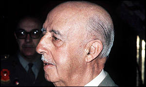

Franco Bahamonde, Francisco (1892-1975)
Jefe del Estado español y Generalísimo de los Ejércitos. Participa en la guerra de áfrica y en la contención de los acontecimientos revolucionarios asturianos de 1917 y 1934. Tras las elecciones de febrero de 1936, es destinado a la Comandancia General de Canarias, donde entra en contacto con los conspiradores del alzamiento contra el gobierno de la República. Se le confía la sublevación del Ejército en áfrica.
Al término del conflicto civil, Franco asume en su persona todos los poderes: es jefe del Gobierno y del Estado y Generalísimo de los tres Ejércitos. Meses después estalla la Segunda Guerra Mundial, y el régimen del general Franco es objeto de fuertes presiones por parte de las potencias del Eje, con el objeto de que abandone su postura de neutralidad y participe en el conflicto mundial. En este ambiente, tiene lugar la entrevista de Franco y Hitler en Hendaya, el 23 de octubre de 1940; en ella consigue mantener la postura de no intervención, al tiempo que España se compromete a organizar una fuerza expedicionaria, la denominada "División Azul".
Finalizado el conflicto mundial, la Organización de Naciones Unidas (ONU), aconseja la retirada de los embajadores acreditados en España. Además, Francia cierra sus fronteras, con lo que la España de Franco comienza una etapa de aislamiento internacional. El 26 de septiembre de 1953 termina el bloqueo internacional con la firma de un acuerdo militar entre España y Estados Unidos, por el que se instalaban bases militares en el territorio español. El 15 de diciembre de 1955, España ingresa como miembro de pleno derecho en la ONU.
Paralelamente, el régimen franquista se va institucionalizando, al tiempo que, con el paso de los años, se encamina hacia fórmulas menos rígidas. En 1966 se aprueba una propuesta de Ley Orgánica del Estado en la que se preveía la separación de los cargos de jefe de Estado y de Gobierno. Y el 22 de julio de 1969 las Cortes aprueban la designación de don Juan Carlos como sucesor a la jefatura del Estado, con el título de Rey. En el nuevo gabinete de gobierno constituido el 11 de junio de 1973, se materializó, por primera vez, la separación entre el jefe de Gobierno, que recae en su íntimo colaborador, el almirante Carrero Blanco, y la jefatura del Estado, que conserva Franco. La muerte de Carrero Blanco, consecuencia del atentado reivindicado por la organización vasca ETA el 20 de diciembre de 1973, aceleró la desintegración del régimen, ya muy debilitado por la lucha obrera organizada y la agitación estudiantil. La crisis se agudiza con la enfermedad de Franco, en julio de 1974, durante la cual cedió temporalmente la jefatura del Estado al príncipe Juan Carlos. El 30 de octubre de 1975, Franco cae gravemente enfermo, y muere el 20 de noviembre del mismo año.